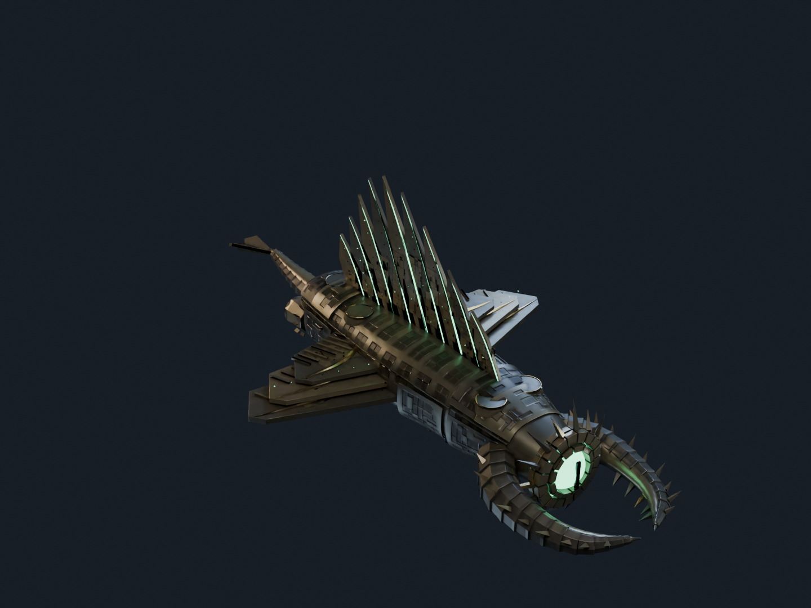

Lycheetah · Sovereign Eclipse · Collection III
The Nine.
Nine original hulls. Nine civilisations.
From a pursuit engine to a solar reliquary: distinct silhouettes, layered armour and exposed working structures.
Design studies. The larger production run is held while Vesper Basilica receives a focused rebuild.

The project benchmark · existing cloud-authored hull
Savanah Apex
Photographed in the same studio. Its layered mechanical construction informed this collection. EVE’s Rifter, Kronos and CCP’s ship-art notes supplied visual references. The nine ships use original geometry and Lycheetah’s civilisation designs.